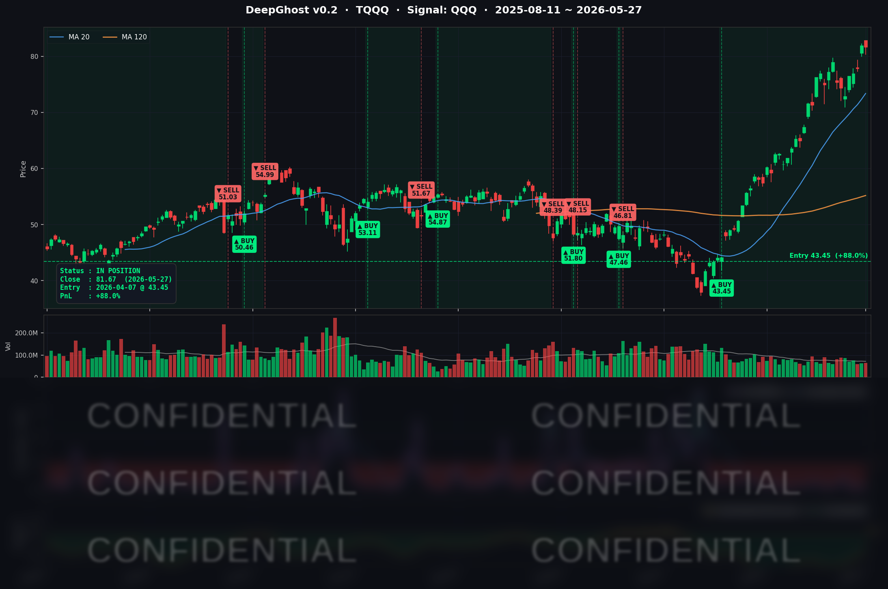

호르무즈가 개방되고 유가가 하락하여 기준 금리를 내릴 것을 반영하고 있습니다.
악재가 없습니다. 유일한 악재는 단기간 급등입니다.
미재무부 장관이 현재 물가 상승은 "일시적"이라며 채권가격 하락을 방어했습니다.
미국은 주식/채권 시장이 "신" 입니다.
오늘의 매매 신호
| 항목 | 내용 |
|---|---|
| 오늘 할 일 | ✅ 아무것도 안 해도 됩니다 |
| 포지션 상태 | 📈 TQQQ 보유 중 (IN POSITION) |
| 매수 진입일 | 2026-04-07 (50일째) |
| 진입가 → 현재가 | $43.45 → $81.67 |
| 현재 포지션 수익 | +87.96% |
TQQQ 시그널 — IN POSITION
현재 상태: 매수 포지션 유지 중 | 누적 수익률 +87.96%

{"originWidth":2188,"originHeight":1451,"style":"alignCenter","caption":"본 매매 시그널은 Ghost.AI 퀀트 알고리즘 출력 시그널을 활용한 매매 전략의 예시입니다."}_##]
시그널이 말하는 것
오늘 TQQQ 는 -0.34% 로 사실상 보합이었고, 모델 내부 지표는 어제보다 더 깊은 매수 우호 구간으로 들어갔습니다. 보합 마감을 "휴식 → 추가 매수 강도 회복" 으로 판독한 셈입니다.
50일 전(4/7) 전쟁 패닉의 바닥에서 진입한 $43.45 자리는 오늘 $81.67 까지 올라왔습니다. 누적 수익률 +87.96% 청산 트리거(모델이 매수 신호를 거둬들이거나, 시장 변동성 지표가 위험 구간으로 올라가는 두 조건) 와는 여전히 거리가 매우 큽니다.
단, 단기간 급등하여 차익실현 충동이 큰 구간입니다. 5/30 (금) PCE 발표가 예상되어 있는데 이 결과와 유가의 끈적끈적함이 조정의 빌미로 작동할 가능성이 있습니다. 미국 국채금리, 유가 상황을 유심히 지켜보시고 주가 방향과 비교해 보시기 바랍니다.
오늘 미국 마감 — 주요 이슈 서머리
지수 마감
| 지수 | 종가 | 등락률 |
|---|---|---|
| S&P 500 | 7,520.36 | +0.02% |
| Nasdaq Composite | 26,674.73 | +0.07% |
| Dow Jones | 50,644.28 | +0.36% (사상최고치) |
| Russell 2000 | 2,919.94 | -0.02% |
| QQQ | 729.45 | -0.11% |
| TQQQ | 81.67 | -0.34% |
| IWM | 290.37 | -0.05% |
S&P 500·나스닥은 사상최고치 부근에서 4거래일 연속 상승 후 처음으로 휴식. 반면 다우가 단독 신고가 를 또 한번 경신했습니다. 핵심 동력은 유가 -5% 급락(Strait of Hormuz 1개월 내 오픈 보도) 으로 항공·운송·소비 시클리컬이 강세였기 때문입니다.
국채 금리 & 연준
| 만기 | 수익률 | 전일 대비 |
|---|---|---|
| 3개월 (^IRX) | 3.585% | +0.3bp |
| 5년 (^FVX) | 4.177% | -0.6bp |
| 10년 (^TNX) | 4.481% | -1.2bp |
| 30년 (^TYX) | 5.011% | -1.5bp |
어제(5/26) 의 강한 bull steepening 이후 오늘은 장기물이 1~1.5bp 소폭 추가 후퇴하는 미세한 bull flattening. 5거래일 누적으로 보면 10년물은 5/22 4.558% → 5/27 4.481% 로 약 8bp 하락했습니다.
다만 5/27 당일 Kashkari 미니애폴리스 연준 총재 가 "Fed must focus on containing inflationary risks" 라며 "10월 금리 인상 가능성을 가격에 반영 중인 시장에 다음 금리 변동을 단언하기엔 too soon" 이라고 발언. 매파 톤이 다시 유입됐고, 어제의 단기 인하 기대 회복은 일부 후퇴했습니다. 그 결과 채권은 추가 강세, 주식은 보합으로 두 신호가 상쇄.
같은 날 공개된 Beige Book 은 12개 연은 지역에서 "물가 상승은 modest~moderate, 고용 균열은 일부 지역에서 관찰" 의 양면 톤이었습니다.
핵심 이슈
- Strait of Hormuz 1개월 내 재개 보도 → 유가 -5%. 이란 국영 매체가 "미국과의 합의 도달 시 1개월 내 Hormuz 상업 통항 복구" 보도. WTI $89.50 (-4.68%) 로 6주래 최저, Brent $92.93 (-6.68%) 로 100달러 하향 이탈 후 추가 후퇴. 백악관은 "MOU 보도는 조작" 이라고 부인했지만 시장은 협상 방향성 자체에 반응. 다우 신고가의 직접 동력.
- QCOM -6.20% — 칩 섹터 차익실현 + Apple 모뎀 익스포저 재부각. 5/22 어닝 비트 + Stellantis 자동차 파트너십으로 5/22 +11% / 5/26 +4.48% 누적 랠리 직후 차익실현이 한꺼번에 분출. Mizuho 가 Apple 자체 모뎀 수직통합으로 인한 Qualcomm 점유율 ~20% 축소(연 매출 헤드윈드 $40~50억) 를 재경고. 칩 섹터 전반(AVGO -0.04%, INTC -1.42%, NVDA -1.05%) 도 동조 약세.
- META +3.74% — "Meta One" AI 챗봇 유료 구독 출시. Meta One Plus $7.99/mo, Meta One Premium $19.99/mo. Instagram Plus $3.99, Facebook Plus $3.99, WhatsApp Plus $2.99 글로벌 출시. 시장은 거대한 AI capex 를 상쇄할 신규 수익원 등장에 환호 → 장중 $638 터치, $635.26 마감. 단일 종목이 QQQ 보합을 거의 떠받친 구조.
매크로 체크
- VIX: 16.29 (-4.23%) — 16 대 진입, 옵션 시장은 유가 후퇴 + 채권 안정에 변동성 추가 완화로 반응
- CNN 공포탐욕 지수: 약 60 (Greed 경계) — Dow 신고가에도 나스닥 보합이 평균을 끌어내려 60 부근 유지
- WTI / Brent: $89.50 (-4.68%) / $92.93 (-6.68%) — Brent 100달러 하향 이탈, 6주내 최저
- Gold: $4,487.50 (-0.29%), GLD ETF $408.49 (-1.33%) — 4월 이후 최대 일중 낙폭, 안전자산 수요 추가 약화
- 이번 주 핵심 이벤트: 5/29 (Thu) Q1 GDP 2차 추정치 + 신규 실업수당, 5/30 (Fri) 4월 PCE Price Index — 헤드라인·코어 모두 시장 방향 및 금리 패스에 중요함.
커버리지 종목 동향
| 종목 | 종가 | 등락률 | 비고 |
|---|---|---|---|
| AAPL | 310.85 | +0.82% | $310 회복, QCOM 모뎀 헤드라인이 오히려 AAPL 의 수직통합 가치 부각 |
| NVDA | 212.60 | -1.05% | 반도체 차익실현 동조, Q1 FY27 어닝(5/20) 이후 $215 박스권 하방 테스트 |
| MSFT | 412.67 | -0.81% | 빅테크 차익실현 지속, AI/Azure 펀더멘털은 유지 |
| GOOGL | 388.83 | -0.01% | $390 저항권 보합, 별다른 헤드라인 없음 |
| META | 635.26 | +3.74% | "Meta One" AI 챗봇 유료 구독 출시. 장중 $638 터치 |
| AMZN | 271.85 | +2.47% | 빅테크 내 로테이션 매수, $270 저항 돌파 |
| TSLA | 440.36 | +1.56% | Piper $500 / Wedbush $600 업그레이드, 로보택시 Austin→Dallas→Houston 확장 |
| NFLX | 87.35 | -0.38% | 약세 흐름 지속, 별다른 헤드라인 없음 |
| AVGO | 421.86 | -0.04% | 반도체 차익실현에도 거의 보합 — Custom silicon 모멘텀이 매도세 흡수 |
| QCOM | 233.40 | -6.20% | 5/22~5/26 누적 +20% 후 차익실현 + Mizuho Apple 모뎀 경고. ByteDance AI 칩 호재로도 방어 실패 |
| INTC | 121.77 | -1.42% | 반도체 섹터 동조 약세, Citi TP $130 모멘텀 일부 되감기 |
시장과 시그널 — 오늘의 인사이트
1. 모델이 QCOM 패닉을 "기회" 로 읽는 중
오늘 가장 주목해야 할 종목은 QCOM 입니다. 종가 -6.20% 로 커버리지 13종 중 최대 낙폭이었지만, 모델 내부 지표는 어제 -1.922 → 오늘 -2.391 로 처음으로 매수 우호 임계선을 하향 돌파했습니다. 4거래일 연속 이 수준을 유지하면 신규 매수 신호가 발생할 수 있는 구간으로 진입한 것입니다.
모델의 해석은 이렇습니다. Mizuho 의 Apple 모뎀 헤드라인은 새로운 정보가 아닙니다 — 5/22 어닝 비트 + Stellantis 파트너십으로 누적 +20% 랠리한 직후 알려진 리스크가 차익실현 트리거로 재활용된 케이스입니다. 펀더멘털 손상이라기보다는 포지셔닝 리셋 입니다. ByteDance AI 칩 공급 호재까지 깔린 상황에서 -6.20% 는 모델 관점에서 mean-reversion 기회로 보입니다.
체크 포인트: 다음 1~3 거래일 동안 QCOM 시그널 강도가 유지되면 신규 매수 신호가 활성화될 가능성이 큽니다. -6.20% 의 패닉이 펀더멘털 손상인지 차익실현인지의 판단이 곧 매수 여부의 갈림길입니다.
2. 빅테크 로테이션과 모델 진입 타이밍이 정확히 일치
오늘 AMZN(+2.47%)·TSLA(+1.56%)·INTC(-1.42%) 의 3종 신규 진입은 모두 5/26 시그널 발생 → 5/27 시초가 체결이었습니다. 그리고 같은 날, 빅테크 로테이션의 카탈리스트(META AI 구독 발표·Wedbush TSLA $600 업그레이드) 가 정확히 동시에 터졌습니다.
- AMZN: 진입 첫날 +2.14% PnL — 시그널 강도와 시장 모멘텀이 같은 방향
- TSLA: 시초가 $442.82 가 이미 카탈리스트를 반영한 가격이라 진입 첫날 -0.55%. 다만 신호 자체는 카탈리스트와 동시 발생
- INTC: 반도체 동조 약세로 -2.28% 출발, 단 모델 신호는 진입 후에도 추가로 강화 — 단기 노이즈로 판독
핵심 메시지는 "모델이 시장 흐름을 뒤쫓아 따라가는 게 아니라, 시장 카탈리스트와 거의 동시에 진입한다" 는 점입니다.
3. META 빅랠리를 모델이 놓친 이유
META +3.74% 빅랠리는 모델이 진입하지 못했습니다. 시장 레짐 필터 지표가 청산 권역 직전 수준으로 올라가 있어 신규 매수가 사실상 봉쇄됐기 때문입니다. 이건 인정하고 가야 할 부분입니다.
다만 META 역시 4거래일 연속 매수 강도가 누적되며 진입 직전 단계에는 와 있었습니다. AI 수익화 카탈리스트가 갭으로 가격에 한꺼번에 반영되지만 않았다면 며칠 안에 진입했을 가능성이 큰 종목입니다.
보너스: TQQQ +87.96% 의 보유 컨빅션이 오히려 더 깊어졌다
TQQQ 모종목인 QQQ 의 매수 강도가 어제보다 더 깊어졌고, S&P 추종 SPY 는 13종 중 가장 강한 매수 신호를 유지 중입니다. 보합 마감에도 모델이 청산 트리거와의 거리를 더 벌린 상태 — PCE(5/30) 직전이라는 단일 이벤트 리스크가 있어도 코어 포지션 유지 컨빅션은 흔들리지 않습니다.
내일을 위한 체크리스트
- [ ] QCOM 매수 신호 활성화 여부 — 매수 우호 강도가 4거래일 연속 유지되는지 추적
- [ ] 5/29 (Thu) Q1 GDP 2차 추정치 + 신규 실업수당 — 매크로 톤 확인
- [ ] 5/30 (Fri) 4월 PCE Price Index — 헤드라인/코어 모두 변동성 직접 트리거
- [ ] 반도체 차익실현 확산 여부 — QCOM/AVGO/INTC/NVDA 동조 약세가 단일 종목 리셋인지 섹터 리셋인지 판별
- [ ] TSLA / INTC 신규 진입 추적 — 진입 첫날 약세였던 두 종목의 시그널 추가 강화 여부
- [ ] Hormuz 협상 헤드라인 반전 가능성 — 백악관 부인 후속, 유가 단일 이벤트 리스크
Ghost.AI — Quantitative AI Investment
Model: DeepGhost v0.2 | Transformer-Based Deep Learning
Coverage: 13 tickers | Updated every trading day after US market close
⚠️ 본 자료는 정보 제공 목적으로만 작성되었으며 투자 권유가 아닙니다. 모든 투자의 책임은 투자자 본인에게 있습니다. 과거 성과가 미래 수익을 보장하지 않습니다.
[유의사항]
- 고스트에이아이 주식회사는 「자본시장과 금융투자업에 관한 법률」 제101조에 따른 유사투자자문업자로 등록된 사업자입니다. (예정)
- 본 서비스는 불특정 다수를 대상으로 발행되는 일방향 정보 제공 서비스이며, 투자자 개인의 재산 상황·투자 목적·위험 선호도를 반영한 개별 투자 조언이 아닙니다.
- 고스트에이아이 주식회사는 고객과 쌍방향 의사소통(개별 상담, 맞춤형 자문 등)을 제공하지 않습니다.
- 본 콘텐츠는 투자 권유 또는 매매 주문의 청약·청약의 권유에 해당하지 않으며, 최종 투자 판단 및 그에 따른 손익의 책임은 전적으로 투자자 본인에게 있습니다.
고스트에이아이 주식회사 | 유사투자자문업 등록번호: 제2025-000호